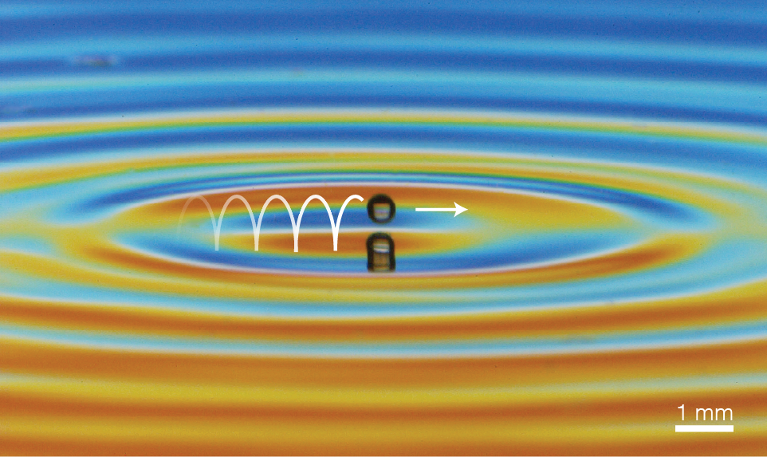
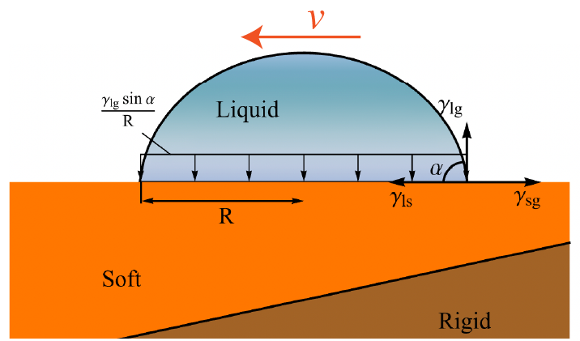
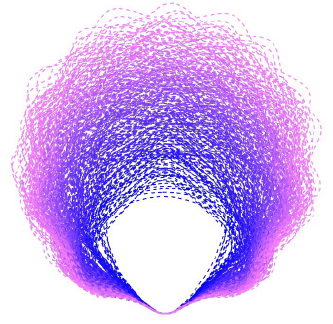

Research Areas
I study research problems of complex transport and pattern formation phenomena at fluid and solid interfaces that may be engineered or spontaneously generated for various functionalities. These systems often involve multiscale dynamics at a capillary or millimetric lengthscale that can be observed in experiments and analyzed with careful mathematical modeling. The applications span diverse areas, from marine particulate flow and biological swimming to bio-inspired materials and sustainable energy transport.

Spontaneous Propulsion at Vibrating Interfaces
We are investigating a novel class of fluid transport methods using external vibrations that result from a spontaneous symmetry breaking of the interface. We found that capillary-sized bubbles exhibit spontaneous self-propulsion by asymmetric shape oscillations when vertically vibrated in a liquid domain against a wall. These "galloping bubbles" move efficiently in directions perpendicular to external forcing, which would be useful for guided propulsion in heat transfer and microfluidic applications. In a comprehensive study combining experiments, numerical simulations, and first-principle analytic theory, we uncovered the underlying mechanism to be a simple realization of inviscid swimming, which may motivate efficient small-scale transport systems.
Diffusion-Induced Transport in Stratified Fluid
Bodies immersed in stratified flow, such as the ocean, are known to self-generate flows due to solutal or thermal diffusion, but the importance of such flows to geophysics is not well understood. We have recently discovered that symmetric bodies in stratification are able to leverage diffusion-induced flows to self-propel and collapse onto nearby walls. As a collective, this mechanism causes particles to aggregate and approach boundaries where they eventually settle. This phenomenon has profound implications for the transport of nutrients and microplastics in marine environments.

Wave-Guided Granular Matter
Self-propulsion of solid particles on a fluid interface is interesting to both engineering and physics due to its granular nature, which also has active matter analogies. While external vibrations have been used to generate motion along interfaces, a propulsion mechanism without external asymmetry remains elusive. We have recently discovered that particles bouncing on a vibrating fluid–fluid interface can spontaneously break symmetry and begin to horizontally self-propel when driven just below the threshold of Faraday waves. The mechanism, inspired by walking droplets, holds promise for many novel collective dynamics including a new wave-mediated granular matter.

Capillary Driven Transport on Soft Materials
Soft solids, such as PDMS and agarose gels, are easily deformable materials that are affected by surface tension forces acting on millimetric scales. Surface tension effects may either be introduced to these materials by contact with a wetting liquid droplet or by the free surface energy of the solid itself, resulting in various instability and transport phenomena unknown to rigid materials. We have developed mathematical models describing the free surface instability and wetting dynamics governed by the elastocapillary nature of these materials.

Free Surface Pattern Formation
I am also interested in the interfacial patterns on free surface flow due to multiscale interactions of surface and body forces. We have investigated the curious phenomenon of polygonal hydraulic jumps where, under certain experimental conditions, a circular hydraulic jump can break its symmetry and assume a steady polygonal shape whose corners show a universal shape regardless of the overall geometry.